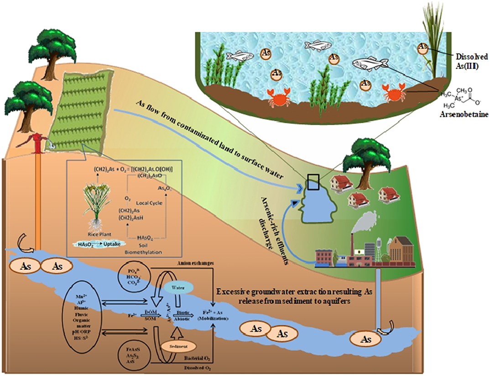

Arsenic is a naturally occurring element that is widely distributed in the Earth’s crust. It is found in water, air, food, and soil. Arsenic is introduced into soil and groundwater during weathering of rocks and minerals followed by subsequent leaching and runoff. It can also be introduced into soil and groundwater from anthropogenic sources. Arsenic is emitted into the atmosphere by high-temperature processes such as coal-fired power plants, burning vegetation and volcanism. In water, particularly groundwater, where there are sulphide mineral deposits and sedimentary deposits deriving from volcanic rocks, the concentrations can be significantly elevated. Natural low temperature bio-methylation and reduction to arsines also releases arsenic into the atmosphere.
Arsenic (As) toxicity has been recognized for centuries past. Arsenic has become a great concern because of its chronic and epidemic effects on human, plant and animal health. Presenting in the terrestrial, marine and freshwater environments in various chemical forms, As may cause substantial damages to the plant and animal kingdoms. Arsenic contamination in the groundwater is becoming more of a threat day by day due to its hazardous effects. Both human and plant species are affected by groundwater As contamination.
Worldwide, nearly 150 million people spanning over 70 countries are affected by As contamination. Countries of South and South-East Asia are mainly affected by As and over 110 million people of these areas are affected by As. Environmental exposure of As through contaminated drinking water severely affects human health. In recent decades, large-scale groundwater pollution by geogenic sources of As in Bangladesh and India (West Bengal) has been detected, which has largely promoted this element into the environment and largely contaminated water, soils and crops. Evoked by the risk of As entering the food chain, the detection of As-contaminated agricultural soils has renewed interest in studying the dynamics of As in the soil environment. Entrance of As into the biological food chain through crops or fodder has also been a danger for humans. Groundwater irrigation is chiefly responsible for As contamination and its entrance into the food chain through crop
Though the farmers are already practicing some traditional techniques to mitigate the arsenic problems in soils and water, like cultivation of crops which are less affected to arsenic and heavy metals pollution, growing hyper accumulating crops and so many practices wherein the modern methods are not prevalently used by the farmers due to the lack of scientific validity of these techniques, particularly in the context of prevailing socio-economic conditions. Moreover, acceptance of these improved practices by the small farmers of this region is an evolutionary process and should be intensively proved. Hence, extensive studies need for bio or phytoremediation of heavy metals including arsenic contamination for quality marketable agricultural produce, which ultimately can realize better crop productivity.
The broad objective of the study aims to evaluate the effectiveness of advanced bioremediation techniques in comparison with traditional system towards improving the quality of water for irrigation vis-à-vis soil and crop quality improvement in diverse soil types through on-farm field experiments with specific objective to make people aware of the arsenic contamination of water and its harmful effects on agriculture and educating them on various measures to reduce its effect on agriculture.
The project successfully brings in front the level of As in different types of crops being sown on same soil. This shows how different crops respond to the same arsenic contamination levels and which crop would be beneficial to be grown in highly contaminated soils or groundwater. According to the results of research: Farmyard manures, compost, neem cake, etc are found to be effective on Arsenic and can be easily implemented in small field/crops too. P2O5 and Zn can be used in big fields to reduce arsenic toxicity. Crops requiring less water also get less contaminated by As, thereby making them a good candidate where there is highly contaminated groundwater. The weeds that grow along-with certain crops like potato, rice, etc accumulate high levels of arsenic in their biomass, thereby reducing the toxicity of As in water and soil and ultimately in the crop. Application of vermicompost and FeSO4 / ZnSO4 also significantly reduces the accumulation of As in crops like rice and mustard.
Arsenic toxicity of contaminated drinking water in humans in many parts of the world and India, has deservedly received increasing concern. Arsenic toxicity in livestock and other animal species like poultry, fish and sea food has been given comparatively much less attention. On the other hand, arsenic contamination in agro-ecosystem, which acts as a conduit for the passage of the toxicant to human population via food web, came under serious consideration only recently. The complex aspects of accumulation of arsenic in the food web vis-à-vis that in drinking water alone is necessary for understanding, and its ultimate passage to the human populations. A comprehensive approach is necessary to combat the present arsenic crisis. Some of the potential remedial options aimed at reducing the toxic effect of arsenic in agricultural systems include developing low arsenic accumulating genotypes, optimum conjunctive use of ground and surface water (e.g., use of harvested rainwater) irrigation with pond-stored excess rainwater and groundwater, recharge of the groundwater resource with rainwater, and enhancing water use efficiency for the agricultural crops by way of adopting appropriate soil and irrigation water management strategies. Irrigation from adjacent pond or permanent water body, recharged by arsenic contaminated shallow tube well, significantly reduce the arsenic load of the irrigation water.